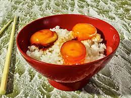

Soy Cured Egg Yolks

Description
These are ridiculously easy to make and the only thing you need to really think about is how long you want to leave them to cure. Leaving them for a total of about 6 hours gives you nice runny yolks while leaving them to cure for 48 hours gives you really nice gel like jammy cured yolks. Up to you how you like them but I prefer the yolks that have been left to cure for longer.
Ingredients
- eggs
- 2 parts soy sauce
- 1 part rice vinegar (mirin)
- sugar (optional)
Steps
- Separate egg yolks into bowl
- Set egg whites aside for whatever use you please.
- Cover egg yolks with soy sauce and mirin combo.
- Cover container and marinate overnight.